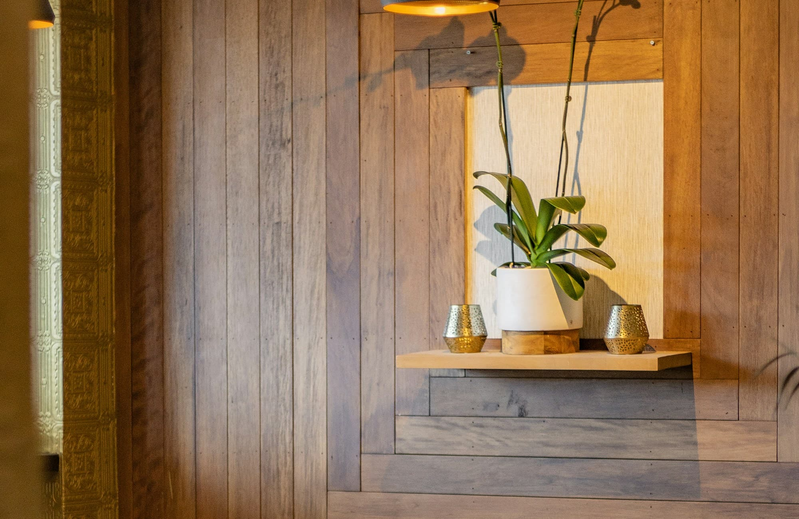
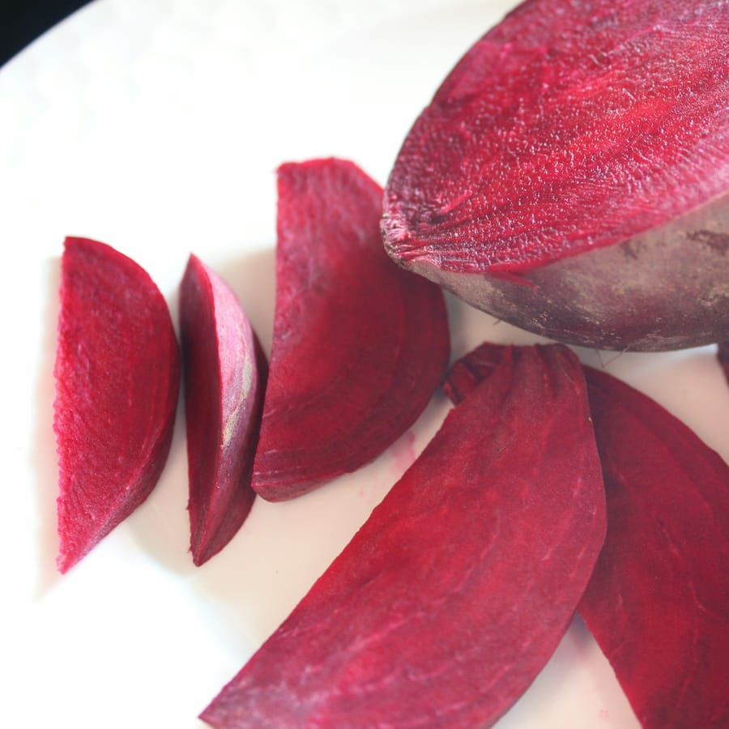
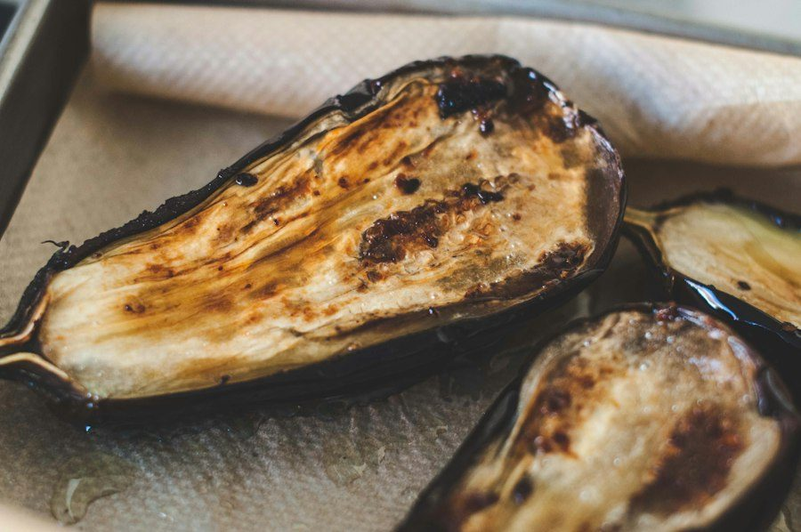
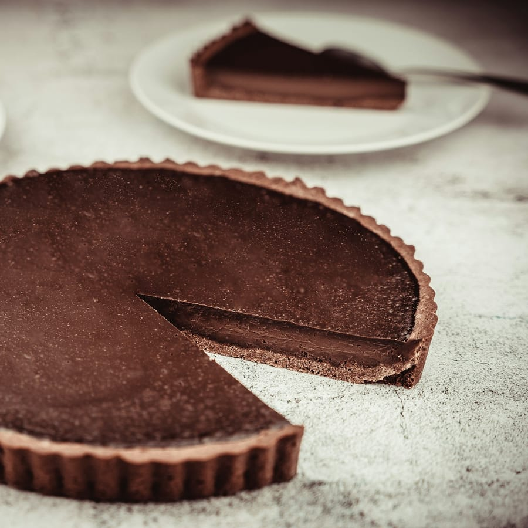
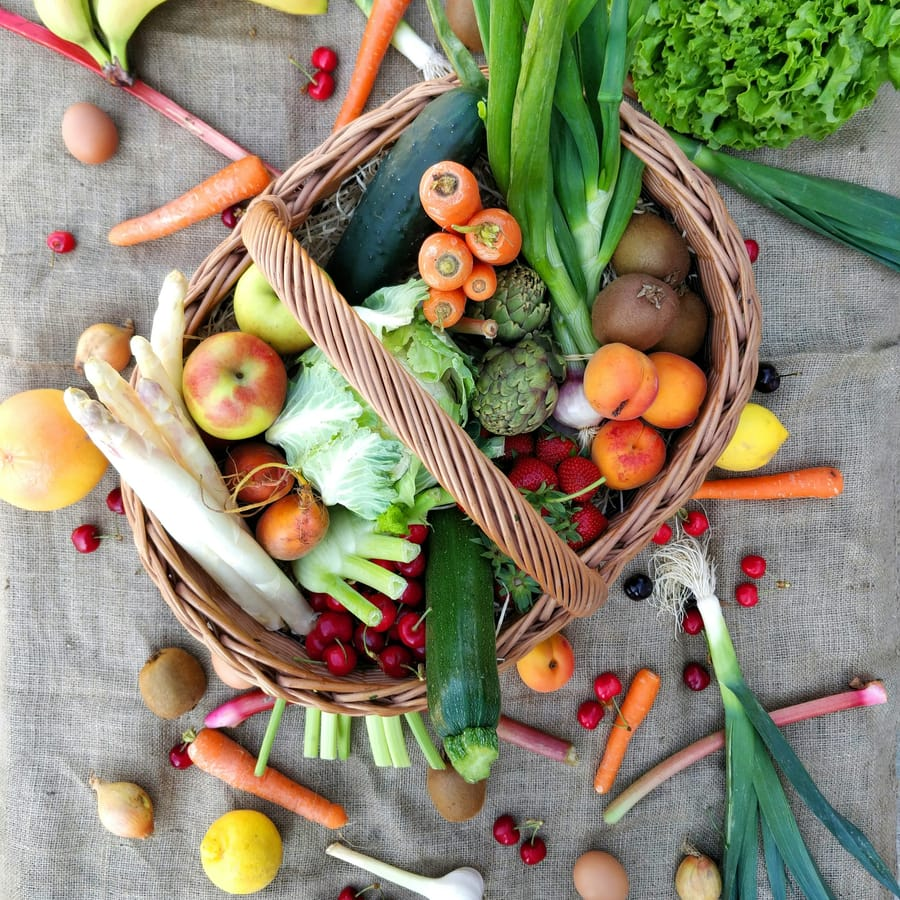
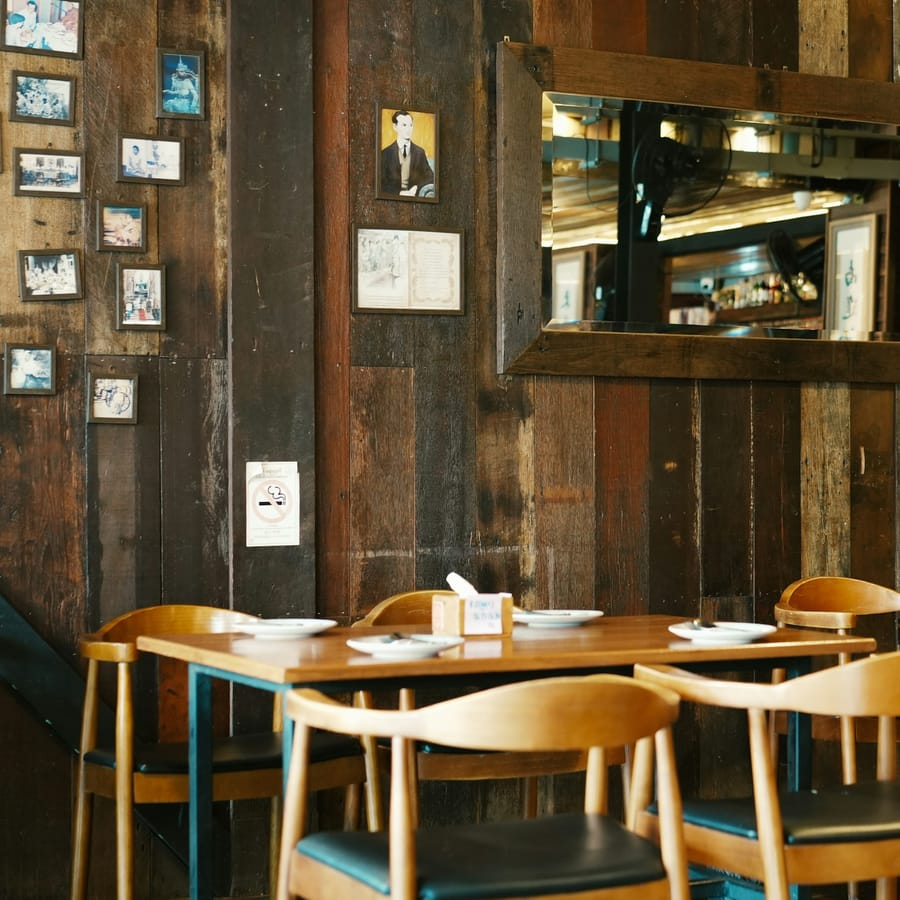
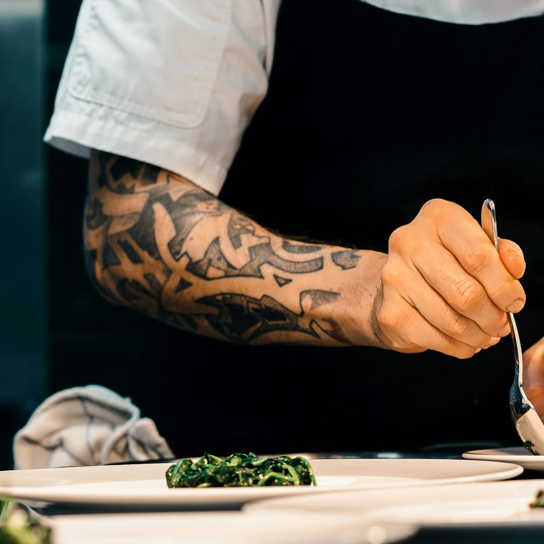

Roasted Beet Carpaccio
$14Golden & red beets, whipped cashew ricotta, pickled mustard seeds, microgreens, smoked paprika oil.
GF

Plant-Based · Portland, OR · Est. Spring 2019
Plant-based. Seasonally driven. Rooted in purpose.
11
Farm Partners
<2 kg
Weekly Landfill
120 mi
Sourcing Radius
Our Philosophy
We opened Verdant Table with a simple belief: great plant-based food doesn't require compromise — it requires creativity, honesty, and a deep respect for where ingredients come from.
Our menu changes with the harvest. We source from 11 farms within 120 miles of Portland, visiting each one personally every season to choose what goes on the plate.
Vegetable trimmings become stocks, citrus peels become garnishes, spent grains go back to the farms as compost. Our kitchen sends less than 2 kg to landfill per week.
We operate a CSA share with four local farms, guaranteeing them a fair price before the season starts — giving us first pick of the harvest and them the financial security to grow sustainably.
Every ingredient on the menu includes a producer note on our printed card. We believe you deserve to know who grew your food and how far it travelled to reach your plate.
Farm Partners
Fenwick Hollow Farm
Yamhill County, OR
Root vegetables & brassicas
Thistledown Grain
Chehalem Valley, OR
Heritage grain & legumes
Marrow Creek Gardens
Tualatin Valley, OR
Edible flowers & micro-herbs
Kestrel Bend Orchard
Willamette Valley, OR
Seasonal stone fruit & berries
Our Story
Chef Maya Okafor grew up in a household where the garden was the pantry. Her grandmother kept a half-acre plot in Lagos, and every meal began not with a recipe but with a walk outside. Maya carried that instinct through culinary school in Paris and a decade cooking in New York, until she arrived in Portland in 2017 and found a farming community that reminded her of home.
Verdant Table opened on a wet Tuesday in March 2019, with a 40-seat dining room, a daily-changing blackboard menu, and a very short list of farm partners. Five years on, we've grown to 60 covers, added a natural wine list, and deepened relationships with eleven regional farms — but the blackboard is still how every week starts.
We believe that plant-based cooking at its best is not about what you remove, but about what you reveal: the sweetness of a carrot slow-roasted for two hours, the umami depth of a properly aged miso, the brightness that only perfectly ripe fruit can provide. Come hungry. Leave changed.
Chef Maya Okafor
Founder & Executive Chef
"Every dish starts with a question: what does this ingredient want to become?"
— Maya Okafor
From Our Kitchen & Fields

Fresh Beets
Sliced beets, on their way to the carpaccio

Roasted Aubergine
Charred skin and a soft centre, for the miso glaze

Chocolate Tart
A dark chocolate tart, with a slice taken out

The Harvest
Vegetables and fruit in a wicker basket

Our Dining Room
Warm wood walls and bentwood chairs

In the Kitchen
A chef finishing a plate on the pass
Book a Table
We're a small room of 60 covers and fill up quickly on weekends. We recommend booking 1–2 weeks ahead for Friday and Saturday dinners.
Groups of 7+: Please email hello@verdanttable.example for private dining inquiry.
Hours & Location
| Day | Lunch | Dinner |
|---|---|---|
| Monday | Closed | Closed |
| Tuesday | 11:30 – 14:30 | 17:30 – 21:00 |
| Wednesday | 11:30 – 14:30 | 17:30 – 21:00 |
| Thursday | 11:30 – 14:30 | 17:30 – 21:30 |
| Friday | 11:30 – 15:00 | 17:30 – 22:00 |
| Saturday | 10:00 – 15:30 | 17:30 – 22:00 |
| Sunday | 10:00 – 15:00 | 17:30 – 21:00 |
48 Grove Street, Portland, OR 97201
Corner of Grove & Oak.